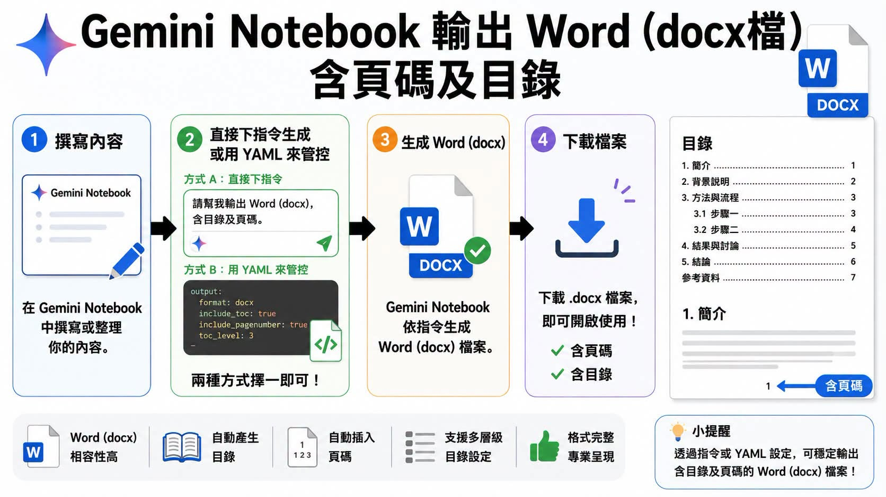

Facebook｜Gemini Notebook 輸出 Word docx：用 AI 成品反推文件基本功

為什麼保存
這則貼文值得收錄，因為它不是單純介紹「AI 幫忙做 Word」，而是提出一個很適合 AI 融入教學的框架：**先看見完整成果，再反推基本功**。
傳統 Word 教學常從大綱模式、標題階層、分節、頁碼、目錄開始，學生先學規則，最後才做出正式文件。貼文的觀點則是：先讓 AI 生成一份已經有目錄、頁碼與階層結構的 docx，再引導學生拆解：為什麼某段會進目錄、為什麼頁碼可以重編、目錄如何更新、標題樣式如何控制文件結構。
Facebook 可見重點
來源是 Facebook 社團「ChatGPT x AI 融入教學」中黃晨的貼文。公開頁面可見貼文標示「AI 內容」，主旨是：
> AI 不是讓 Word 基本功消失，而是把「學習順序」反過來了。
貼文的核心主張包括：
- **基本功沒有消失**：標題樣式、分節符號、頁碼、目錄與文件結構仍然需要理解。
- **學習順序改變**：不一定要先從零操作到成品，可以先觀察 AI 生成的完整 docx，再拆解背後邏輯。
- **成果導向降低抽象感**：學生先看到「會動的目錄與頁碼」，再回頭理解 Word 的樣式與結構，比單純講規則更直觀。
- **AI 是示範材料生成器**：AI 生成的文件不是終點，而是課堂上可以分析、修改、診斷的範例。
公開頁面可見約 50 reactions、29 comments；數字會隨時間變動。
附圖流程整理
附圖標題是「Gemini Notebook 輸出 Word (docx檔) 含頁碼及目錄」，流程分成四步：
- **撰寫內容**：在 Gemini Notebook 中撰寫或整理內容。
- **用指令或 YAML 管控輸出**：
- 方式 A：直接下指令，例如「請幫我輸出 Word (docx)，含目錄及頁碼。」
- 方式 B：用 YAML 設定，例如 `format: docx`、`include_toc: true`、`include_pagenumber: true`、`toc_level: 3`。
- **生成 Word docx**：由 Gemini Notebook 依指令生成 Word 檔案。
- **下載檔案**：下載 `.docx` 後即可用 Word 開啟；圖中強調含頁碼、含目錄、支援多層級目錄設定與格式完整。
右側示意文件目錄包含：簡介、背景說明、方法與流程、步驟一、步驟二、結果與討論、結論、參考資料等，呈現一份可拿來講解目錄與頁碼邏輯的教學成品。
教學設計上的意義
這個案例可以轉成一個「AI 先生成，學生後拆解」的教學流程：
| 階段 | 教師任務 | 學生任務 |
|---|---|---|
| 生成成品 | 讓 AI 產出含標題、目錄、頁碼的 docx | 先觀察成品長什麼樣 |
| 反向拆解 | 指出 Word 的樣式、分節、目錄欄位與頁碼設定 | 找出哪些元素控制文件結構 |
| 手動修正 | 故意製造目錄錯誤、頁碼錯誤或標題階層錯誤 | 練習更新目錄、改樣式、修分節 |
| 再生成 / 再比較 | 用不同 prompt 或 YAML 產出版本 | 比較 AI 設定如何影響成品 |
這樣的設計把 AI 變成「可快速產生範例與錯誤案例的工具」，而不是取代 Word 學習本身。
實務提醒
- **功能可用性需實測**：貼文展示的是社群可見流程；不同地區、帳號、方案或產品版本，Gemini / Notebook 相關 docx 匯出能力可能不同，正式教學前要用自己的帳號實測。
- **不要只教 prompt**：若只教「請輸出 docx」，學生可能只會下指令；課堂仍應回到標題樣式、目錄更新、分節符號、頁首頁尾與版面規範。
- **AI 成品可能有格式瑕疵**：目錄層級、頁碼位置、參考資料格式、表格跨頁、字型與行距都需要人工檢查。
- **文件規範仍要明確**：若用 YAML 或結構化 prompt 管控輸出，建議把標題層級、頁碼格式、目錄深度、引用格式與版面需求寫成可重複使用的模板。
欒帥可延伸的課程用法
這則貼文可以延伸成「AI 文件素養」課堂活動：
- 先給學生一份 AI 生成的 docx。
- 要求學生標出標題樣式、目錄欄位、頁碼、分節與引用區塊。
- 故意打亂標題階層或頁碼，請學生修復。
- 再讓學生改 prompt / YAML，觀察輸出文件如何改變。
- 最後要求學生說明：哪些是 AI 可以代勞的，哪些是人仍需理解與審稿的。
重點不是把 Word 基本功交給 AI，而是用 AI 把「抽象規則」轉成可觀察、可拆解、可修改的教學材料。